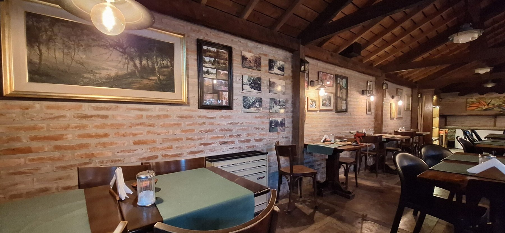
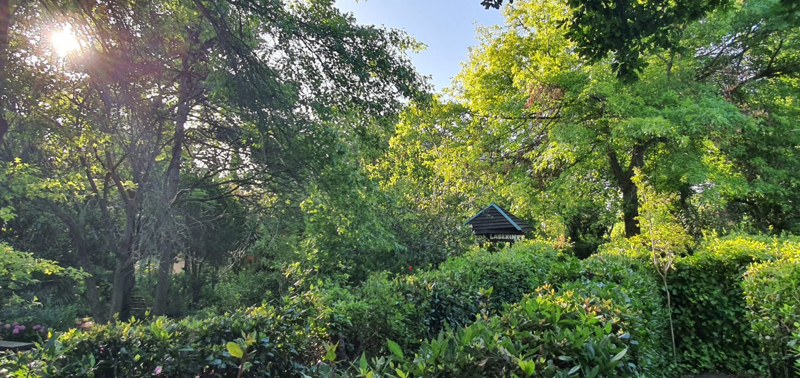
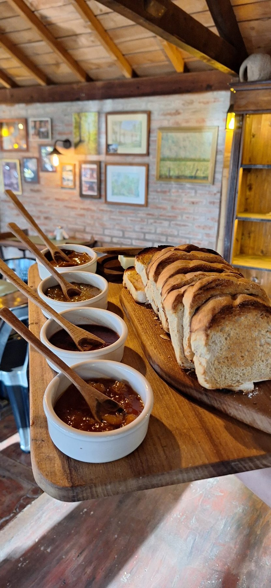

EL ENCUENTRO ALREDEDOR DE LA MESALa Parrilla
01El gusto de sentarse a comer bien. Una propuesta a la carta para compartir en el entorno natural de La Criolla.
◌ Te recomendamos reservar por WhatsApp.

PARRILLA · CASA DE TÉ · MIRAMAR
El sabor de lo casero, una mesa compartida
y la naturaleza haciendo el resto.
BIENVENIDOS A LA CRIOLLA
Vení por una buena comida o por una tarde de té.
Quedate por todo lo que hay alrededor.

EL ENCUENTRO ALREDEDOR DE LA MESAEl gusto de sentarse a comer bien. Una propuesta a la carta para compartir en el entorno natural de La Criolla.
◌ Te recomendamos reservar por WhatsApp.

EL PLACER DE UNA TARDE SIN APUROStroissel, Strudel y repostería alemana para acompañar nuestro famoso té de la casa. Una invitación a hacer una pausa.
◌ Sin reserva. Vení y disfrutá de la tarde.
MUCHO MÁS QUE UNA MESA
Un parque natural para recorrer, un laberinto para dejarse llevar y un estanque de peces para detenerse a mirar. Acá, el paseo también es parte del plan.
ARMÁ TU PLAN
Los días y horarios pueden variar.
Consultanos antes de venir y disfrutá tu visita.
ParrillaAl mediodía
Casa de TéPor la tarde
ParrillaPor la noche
Casa de TéPor la tarde
Horarios orientativos, sujetos a cambios. Confirmá la apertura por WhatsApp.
EL CAMINO HASTA ACÁ
Av. 37 y 52
Miramar, Buenos Aires, Argentina
Escribinos para reservar en la parrilla o resolver tus consultas.
Para la Casa de Té, te esperamos sin reserva.